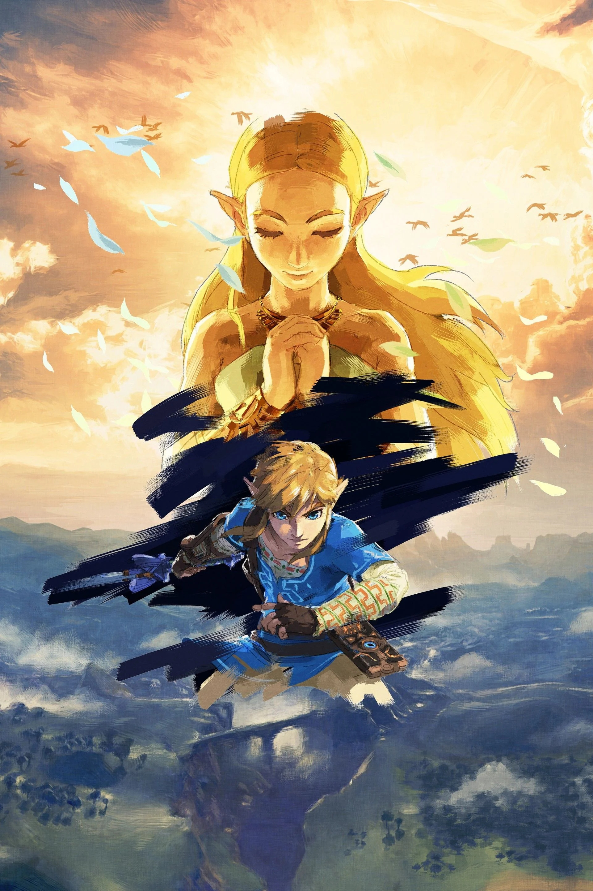

Sinopse
The Legend of Zelda é uma franquia de jogos de ação e aventura criada pela Nintendo. A série acompanha as jornadas de Link, um herói destinado a enfrentar forças malignas e salvar o reino de Hyrule. Frequentemente, ele precisa resgatar a Princesa Zelda e proteger a Triforce, um artefato sagrado que representa poder, sabedoria e coragem.
Os jogos combinam exploração, resolução de enigmas, combates e narrativa épica. Cada título se passa em uma era ou realidade diferente, mas compartilham temas como a luta contra o vilão Ganon (ou Ganondorf), o equilíbrio entre luz e trevas e a conexão entre Link, Zelda e a Triforce.
Com uma mistura de masmorras desafiadoras, mundos vastos e itens icônicos, como a Master Sword e o escudo Hylian, The Legend of Zelda é uma das séries mais aclamadas da história dos videogames, marcada por inovação, música memorável e narrativa atemporal.
O Herói do Tempo é o título dado a Link em The Legend of Zelda: Ocarina of Time. Ele é um jovem Kokiri adotado pela Árvore Deku, que o envia em uma jornada para proteger Hyrule. Link descobre que é o escolhido para deter Ganondorf, o rei dos Gerudos, que busca dominar o mundo usando a Triforce.
Com a ajuda da Princesa Zelda, Link coleta três pedras espirituais e abre a entrada para o Reino Sagrado. No entanto, ao retirar a Master Sword, ele é selado por sete anos, pois ainda era jovem demais para ser o herói. Quando desperta, Hyrule está em ruínas, dominada por Ganondorf.
Link, agora adulto, derrota Ganondorf com a ajuda de Zelda e os sábios, selando o vilão no Reino Sagrado. Após cumprir sua missão, ele é enviado de volta à sua infância, encerrando seu papel como Herói do Tempo, mas carregando o peso de sua jornada.
Após toda essa jornada, o herói do tempo retorna em The Legend of Zelda: Majora's Mask para dar sequência em sua aventura.